Apresentamos aqui um significado resumido de cada Arcano.
Utilizamos o Tarot do ocultista Arthur Edward Waite já que você é um usuário de computadores e, possivelmente, é o que mais encontrará em programas de Tarot para Windows. Porém, o Tarot mais popular continua sendo o de Marselha e a maioria dos baralhos é uma leve variação deste. O Tarot de A. E. Waite é bem diferente e, às vezes, você perceberá que algumas descrições podem não corresponder exatamente à figura que estiver ao lado. O importante é que você escolha um Tarot com o qual “simpatize” mais e crie um elo entre você e ele.
.
| ARCANO | FIGURA | ARCANO | FIGURA |
|---|---|---|---|
| 01 | O Mago | 12 | O Enforcado |
| 02 | A Papisa | 13 | A Morte |
| 03 | A Imperatriz | 14 | A Temperança |
| 04 | O Imperador | 15 | O Diabo |
| 05 | O Papa | 16 | A Torre |
| 06 | Os Amantes | 17 | A Estrela |
| 07 | O Carro | 18 | A Lua |
| 08 | A Justiça | 19 | O Sol |
| 09 | O Ermitão | 20 | O Julgamento |
| 10 | A Roda da Fortuna | 21 | O Mundo |
| 11 | A Força | "0" | O Louco |
.
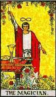
Diante de uma mesa sobre a qual foram colocados os apetrechos de sua
arte, está o mago. Uma das mãos erguidas segurando um bastão
(em alguns baralhos uma taça), a outra, apontando para baixo. Traz
na cabeça um barrete protetor, como o dos Reis, cuja larga aba forma
uma auréola em torno de sua cabeça (forma também o
símbolo do infinito). O corpo e os braços formam a letra
hebraica Aleph. Ele simboliza a Vontade.
Significado da carta: Vontade, Força de Vontade, Destreza,
Energia, Constância, Criatividade, Dedicação aos ideais,
Busca do conhecimento.
Invertida: Vontade usada para fins nocivos, Indecisão, Desânimo.
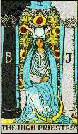
Mulher coroada com uma mitra alta ou tiara (a cabeça envolvida
em um véu), uma estola (ou cruz solar) sobre o seu peito e o Livro
da Ciência aberto em sua mão. Ela representa a Ciência,
a Sabedoria ou o Conhecimento.
Significado da carta: Ciência, Sabedoria, Conhecimento, Educação,
Poder, Discernimento, Praticidade, Bom senso, Moralismo, Segurança.
Invertida: Presunção, Ignorância, Inexperiência,
Conhecimento superficial, Domínio do supérfluo, Egoísmo,
Presunção.
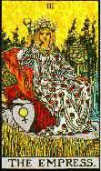
Uma mulher alada e coroada, sentada em um trono, tendo na mão
um cetro sustentando um globo encimado por uma cruz, enquanto repousa a
outra mão sobre um escudo onde está blasonada uma águia,
em cujo peito há uma cruz (em alguns baralhos o escudo traz o símbolo
de Vênus) Ela é o símbolo da Ação,
o resultado da União da Ciência e a Vontade.
Significado da carta: Ação, Planejamento, Empreendimento,
Iniciativa, Progresso feminino, Disposição, Encanto pessoal,
Fertilidade, Realização, Intuição.
Invertida: Inatividade, Desperdício de poderes, Falta de
concentração, Esterilidade, Infidelidade, Vacilação,
Fracasso.
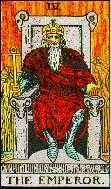
Ele é coroado (e apoiado em um trono, suas pernas formam uma
cruz - como no Tarot de Marselha - e, ao lado dele, sob sua mão
esquerda, há um escudo blasonado com uma águia). Na mão
direita, traz um cetro semelhante ao da Imperatriz. Seu corpo e seus braços
formam um triângulo, do qual a cabeça é o ápoce.
Ele representa a Realização.
Significado da carta: Realização, Efeito, Desenvolvimento,
Estabilidade, Progresso material, Honestidade, Segurança, Apoio,
Organização.
Invertida: Bloqueio, Impedimento, Imaturidade, Falta de energia,
Indecisão, Incompetência, Futilidade, Limitação.
.
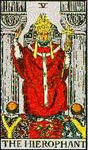
Ele é coroado com a tiara papal, está sentado entre os
dois pilares de Hermes e de Salomão, e faz com a mão direita
o sinal do esoterismo e com a esquerda se apóia a um bastão,
encimado por cruz tripla. À sua frente ajoelham-se dois ministros.
Ele é o símbolo da Caridade e da Beneficência.
Significado da carta:Misericórdia, Beneficência, Bondade,
Gentileza, Poder Espiritual, Espiritualidade, Novos aprendizados, Justiça,
Inteligência analítica, Dever moral, Convencionalismo.
Invertida: Excesso de bondade, Fraqueza, Generosidade Tola, Vulnerabilidade,
Fragilidade, Irracionalidade, Revolta, Projetos retardados, Calúnia.
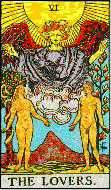
Esta carta é geralmente descrita como a representação
do Homem entre o Vício e a Virtude, enquanto um gênio alado
ameaça o vício com um dardo. Alguns falam de um significado
mais cabalístico e que representaria o Microposopo entre Bibah e
Malkuth. Significa, portanto, a Disposição para a Sabedoria.
Significado da carta: Sábias disposições, Provações,
Tribulações vencidas, Momento de escolha, Liberdade, Confiança,
Beleza e Perfeição, Renúncia aos prazeres, Otimismo.
Invertida: Planos imprudentes, Falhas ao ser posto à prova,
Insatisfação, Separação, Tentações
perigosas.
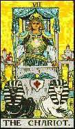
Representa um conquistador coroado, trazendo um cetro, dirigindo um
carro de forma cúbica, constituído de quatro colunas e um
dossel e puxado por dois cavalos que divergem quanto à direção
a seguir. Representa o Trunfo e a Vitória da Justiça
e do Juízo.
Significado da carta: Triunfo, Vitória, Superação
de obstáculos, Equilíbrio, Segurança, Domínio,
Realização, Sucesso, Discernimento, Aproximação
amorosa.
Invertida: Derrotado pelos obstáculos, Subjugado no último
momento, Fraqueza, egocentrismo, Descontrole, Irreflexão, Orgulho,
Brutalidade, Desengano.
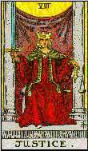
Uma mulher coroada e sentada em um trono, entre duas colunas. segurando
na mão direita, uma espada na vertical e, na esquerda, uma balança.
Ela simboliza Equilíbrio e Justiça.
Significado da carta: Equilíbrio, Compreensão, Justiça,
Austeridade, Imparcialidade, Integridade, Disciplina, Decisão, Resolução.
Invertida: Preconceito, Falta de equilíbrio, Abuso de justiça,
Excesso de severidade, Desigualdade, Intolerância, Prejuízo.
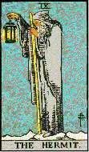
Um velho barbado, envolto em um manto, com a cabeça coberta por
um capuz, trazendo na mão direita a lanterna da ciência oculta,
enquanto na esquerda segura sua vara mágica. Ele representa a Prudência.
Significado da carta: Prudência, Cautela, Reflexão,
Conhecimento, Discrição, Estudo, Sabedoria, Paciência.
Invertida: Excesso de prudência, Timidez, Tristeza, Misantropia,
Ceticismo, Esterilidade, Maus conselhos, Desconfiança, Solidão.
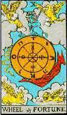
Uma Roda de Sete Raios (em alguns baralhos, como o de Waite, apresentam-na
com oito, o que muitos consideram errado) em um eterno revolver. Do lado
ascendente sobe um animal e, do lado descendente, um macaco (ou cobra).
Acima dela há a forma de um anjo (ou de uma esfinge ou ambos) segurando
uma espada. Simboliza a boa ou má Fortuna.
Significado da carta: Boa sorte, Êxito, Sorte imprevista,
Destino, Mudança, Supremacia, Iniciativa.
Invertida: Má sorte, Fracasso, Inconstância, Interrupção.
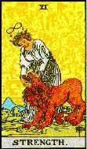
Uma mulher coroada trazendo um barrete de proteção (compare-a
com a figura do Mago). Com calma e sem esforço, cerra as mandíbulas
de um leão furioso. Ela representa a Força.
Significado da carta: Poder, Potência, Força, Inteligência,
Magnetismo sexual, Nova situação sentimental, Harmonia, Valentia,
Visão e compreensão do mundo.
Invertida: Abuso do poder, Arrogância, Falta de coragem. Ira,
Impaciência, Presunção, Natureza fraca, Repressão.
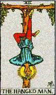
Um homem pendurado em uma espécie de forca, por um pé,
de cabeça para baixo (suas mãos estão amarradas nas
costas de tal modo que forma um triângulo com a ponta para baixo),
com as pernas formando uma cruz. Ele simboliza o Sacrifício.
Significado da carta: Sacrifício e Auto-sacrifício,
Dedicação, Abnegação, Perfeição
moral, Superação do "eu", Escolha errada, Falta
de Vontade, Traição, Abandono.
Invertida: Egoísmo, Desligamento, Sacrifício Parcial,
Total falta de particidade, Impotência, Fuga da realidade, Excesso
de confiança.
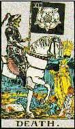
Um esqueleto armado de foice (como que a ceifar cabeças iu grama
em um prado). Também representada como um Cavaleiro do Apocalipse,
onde se vê, ao fundo, um novo dia surgindo. Ela significa Transformação
ou Mudança.
Significado da carta: Mudança, Transformação
radical, renascimento, Libertação dolorosa, Novas perspectivas,
Ascetismo, Insegurança financeira.
Invertida: Recente fuga da morte, Mudança parcial, Alteração
para melhor, Imobilidade, estagnação, Abandono forçado,
Tristeza, Ruína, Fracasso.
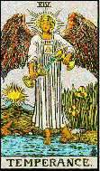
Um anjo com o sinal do Sol na testa, despejando líquido de um
para outro vaso. Ela representa a Combinação.
Significado da carta: Combinação, Conformidade, União,
Moderação, Equilíbrio, Auto- controle, Serenidade,
Harmonia, Paciência, Estabilidade.
Invertida: Combinação impensada, Desunião,
Conflito de interesses, Frustração, Inabilidade, Discórdia.
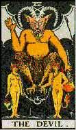
Um demônio com chifre e asas, com garras de águia (sobre
um altar, ao qual outros dois demônios menores estão amarrados
por coleira e corda). Na mão esquerda traz uma tocha. É a
imagem da Fatalidade.
Significado da carta: Fatalidade para o bem, Força misteriosa,
Egoísmo, Sedução sem escrúpulos, Paixões
desenfreadas, Instintos irreprimíveis, Influências ocultas,
Punição.
Invertida: Fatalidade para o mal, Luxúria, Amores proibidos,
Intrigas e Artimanhas, Egoísmo inescrupuloso, Violência e
Degeneração.
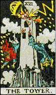
Também nomeada como “A Casa de Deus”. Uma torre cujaparte superior
assemelha-se a uma coroa. Tombam de ponta-cabeça dois homens, um
deles em tal posição que forma a letra hebraica Ayin). A
Torre desmorona em chispas e escombros. Representa a Ruína
e a Destruição.
Significado da carta: Ruína, Rompimento, Queda, Perda, Falência,
Destruição, Dificuldades gerais, Presunção
e orgulho desmedidos, Fracasso Brutal, Vaidades vazias, Timidez, Malogro
Financeiro.
Invertida: Os mesmos significados, geralmente em maior grau. Pode
indicar também Catástrofe, Ruína, Acidente, Terremoto.
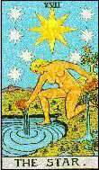
Uma figura feminina nua despeja água de dois vasos. Acima dela,
no céu, brilha a Estrela resplandescente dos Magos (rodeada por
sete outras), crescem árvores e plantas sob sua mágica influência
e em uma delas pousa a borboleta de Psique. Ela é a estrela da Esperança.
Significado da carta: Esperança, Espectativa, Brilhantes
promessas, Inspiração criadora, Autoconfiança, Otimismo,
Energia, Satisfação.
Invertida: Esperanças frustradas, Decepção
com as expectativas realizadas em menor grau, Desunião, Desapontamento,
Interrupção.
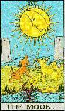
A Lua brilhando nos céus, orvalho caindo, um lobo e um cão
uivando para a Lua, parados aos pés das duas torres, um caminho
que se perde no horizonte (e é salpicado com gotas de sangue), um
lagostim (emblema do signo de Câncer, regido pela Lua) arrasta-se
através da água, em primeiro plano, na direção
da Terra. Ela simboliza o Crepúsculo, a Decepção
e o Erro.
Significado da carta: Decepção, Engano, Obscuridade,
Embuste, Advertência, Forças Ocultas, Desilusão, Entorpecimento,
Superficialidade.
Invertida: Decepçãos insignificantes, Enganos sem
importância, Oportunismo, Presença de espírito, Vantagem.
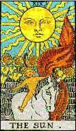
O Sol envia seus raios sobre duas crianças (na maioria dos baralhos.
No de Waite, sobre uma criança montada em um cavalo). Atrás
delas há um muro baixo. Significa Felicidade Terrena.
Significado da carta: Felicidade, Contentamento, Júbilo,
Realização, Entusiasmo, Sinceridade, Prazer.
Invertida: Presunção, Rompimento, Futuro incerto,
Solidão, Adiamento.
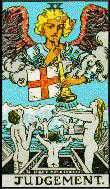
Também nomeada como “O Juízo Final”. Um anjo no céu
toca uma trombeta, à qual está amarrado um estandarte com
uma cruz. Os mortos levantam-se dos túmulos. Significa Renovação,
Resultado.
Significado da carta: Renovação, Resultado, Decisão
sobre um assunto, Renascimento, Libertação, Gênio inventivo,
Sentimento de Justiça, Saúde física, Novas relações,
Revelação de desígnios ocultos.
Invertida: Adiamento dos resultados, Protelação, Assunto
a ser reaberto mais tarde, Ofuscamento da inteligência, Alegria inútil,
Inimigos ciumentos, Sentimentos de culpa, Dúvidas.
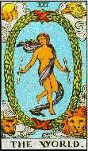
Dentro de uma guirlanda florida, uma mulher nua, coberta apenas por
uma faixa leve. Ela representa a Natureza e a Divina Presença que
nela existe. Em cada mão deve trazer um bastão. Nos quatro
ângulos da carta estão os quatro animais angélicos
do Apocalipse. Acima, a Águia e o Homem; abaixo, o Leão e
o Touro. É considerada a melhor carta do Tarot. Representa a Integridade
e a Recompensa.
Significado da carta: Conclusão, Boa recompensa, Sorte, Sucesso
Total, Finalização das obras, Encontro do Amor, Lucidez,
Liberdade, Felicidade.
Invertida: Má recompensa ou retribuição, Falta
de vontade, Dispersão, Obstáculos, Ambiente hostil, Estancamento.
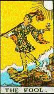
Um homem com gorro de bufão, vestido como um bobo da corte, tendo
ao ombro uma vara com uma trouxa como se não precisasse de mais
nada. Em algums baralhos, ataca-o por trás, às vezes um tigre,
outras um cão. Não tem número mas, em alguns baralhos,
colocam- lhe o “zero”. Ele siginifica a Tolice, a Expiação.
Significado da carta: Loucura, Expiação, Hesitação,
Isolamento, Indecisão, Precipitação, Ingenuidade.
Invertida: Instabilidade, Falta de confiança, Desânimo,
Obsessão, Remorso.
.
.